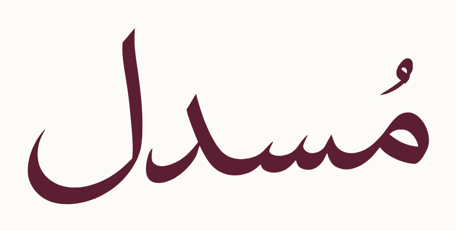
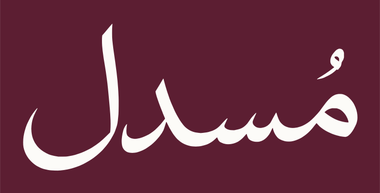
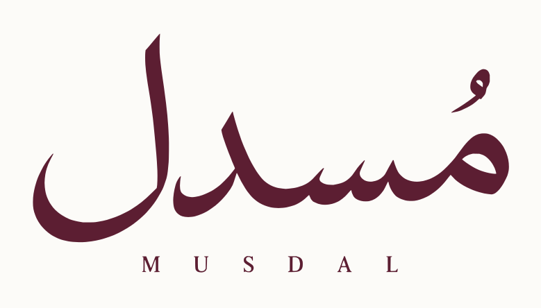
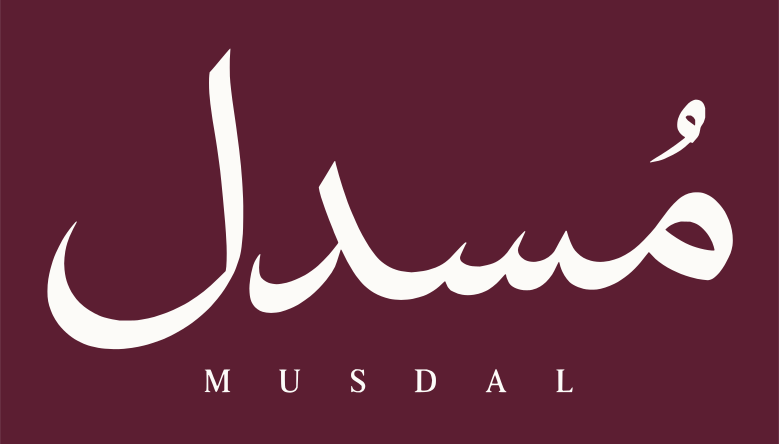
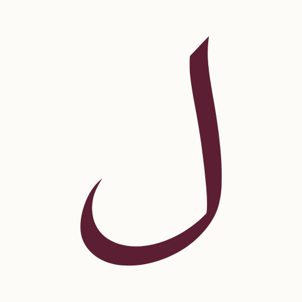
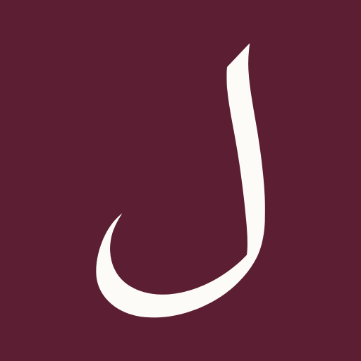
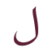
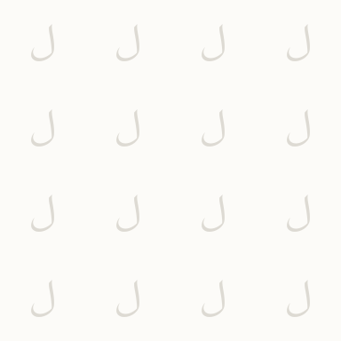

مُسدل · حزمة SVG المتجهية
اللوغو ككلمة، اللام والفافيكون، الألوان وأربع عائلات باترن. جميع الرسومات مسارات وأشكال متجهية؛ الحروف مرسومة كمسارات.
تنزيل الحزمة كاملة · ZIPتم تحويل الأصول المعتمدة إلى مسارات قابلة للتكبير، مع الحفاظ على شكل اللوغو واللام ونسبهما.
اللوغو العربي





اللوغو العربي مع MUSDAL






إمبلم اللام الطويلة






الفافيكون · أحجام فعلية



الباترنز · الموقع والتغليف والقرطاسية

إيقاع الانسدال


خط الحافة


شبكة النسج



تكرار اللام


ملفات التكرار مستقلة. يتكرر طرفها بسلاسة عند استخدامها كخلفية؛ كبّرها بالتناسب لتغيير كثافة الباترن في التغليف والقرطاسية.
الألوان المعتمدة


ملفات إضافية


ملف التصميم المتجهي الأصلي قبل التوليد غير متوفر؛ هذه إعادة بناء متجهية للرسومات المعتمدة. لا تحتوي رسومات اللوغو أو الفافيكون على صورة مدمجة أو نص يتطلب تثبيت خط.